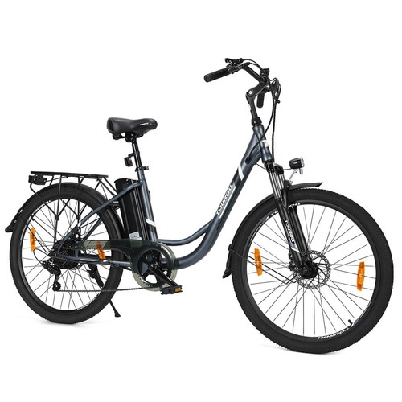
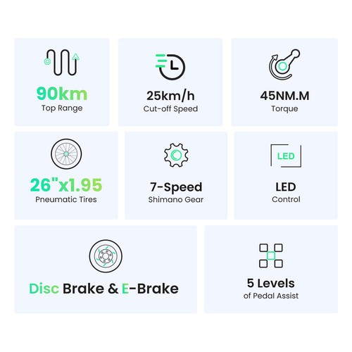
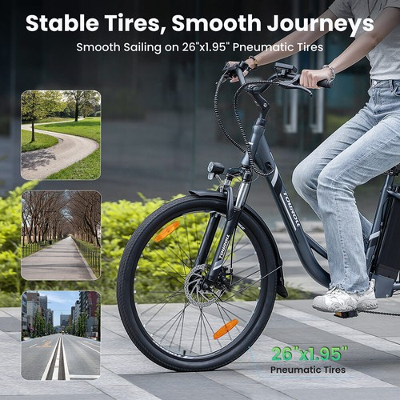
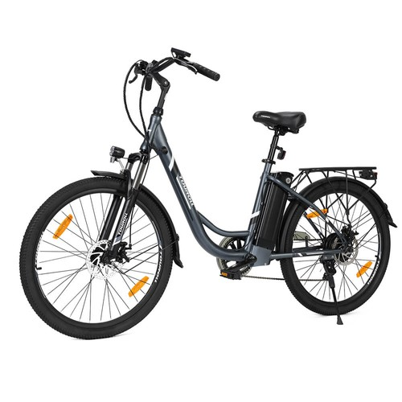

| Quick Bird

Navigating urban streets and daily commutes requires a reliable, comfortable, and efficient eco-friendly ride. The Touroll B1 Electric City Bike is thoughtfully designed for urban riders, combining practical power, impressive battery endurance, and smooth gear performance to make every journey effortless.
Check specs and official prices:
More Details & Buying OptionsEfficient 250W Motor and High-Capacity Battery: Driven by a dependable 250W motor delivering 45Nm of torque, this city bike provides smooth acceleration and steady climbing capabilities for urban environments. Powered by a robust 36V 15.6Ah battery, it supports an impressive maximum range of up to 90 km in assist mode, minimizing frequent recharges during your weekly commute.

Comfortable Ride and Shimano Gearing System: Designed for rider convenience, the bike features 26x1.95-inch tires combined with a responsive mechanical shock absorber to soften bumps on rough city pavement. It also incorporates a reliable 7-speed Shimano gear system, 5 selectable assist levels, and a 6 km/h walk mode for maximum operational ease.

